02 / 05
Mortazza
Mortadella, erbette, squacquerone, scorza di limone e noce moscata
Impasto tradizionale
Il limone che non ti aspetti sopra la mortadella.
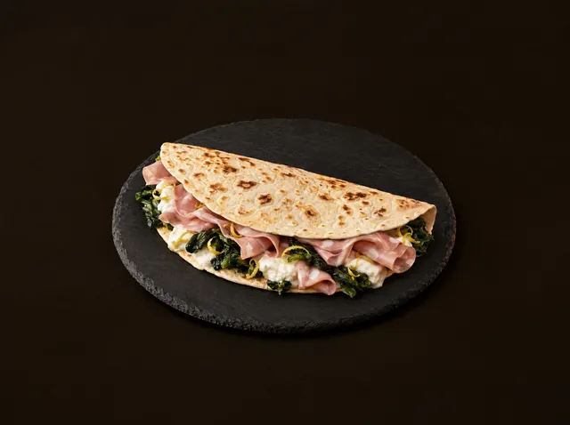

 Chiama 339 239 9868
Chiama 339 239 9868
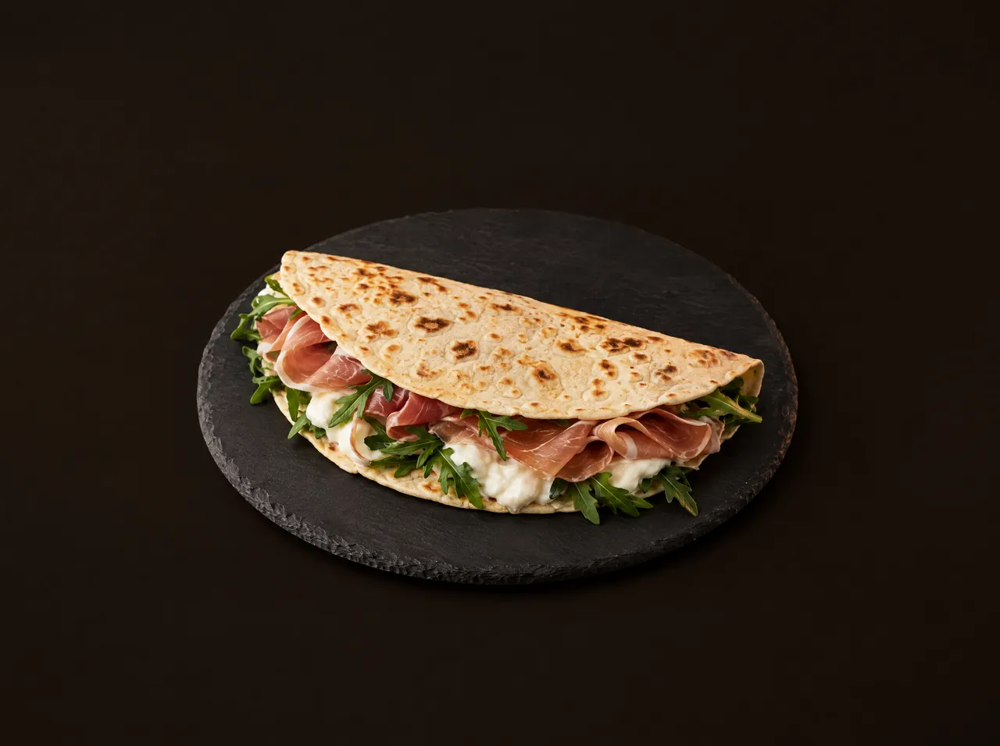
Un angolo di Romagna a Voghera · dal 2016
Piadine e cascioni artigianali, con materie prime scelte e la ricetta della tradizione riminese. Scorri: la piada gira e cambia farcitura.
01 La Classica · prosciutto crudo, squacquerone e rucola
02 / 05
Mortadella, erbette, squacquerone, scorza di limone e noce moscata
Impasto tradizionale
Il limone che non ti aspetti sopra la mortadella.

03 / 05
Spianata calabrese, caprino, peperoni grigliati, salsa fuoco e pepe
Impasto speziato
Brucia al punto giusto: piccante, ma non troppo.
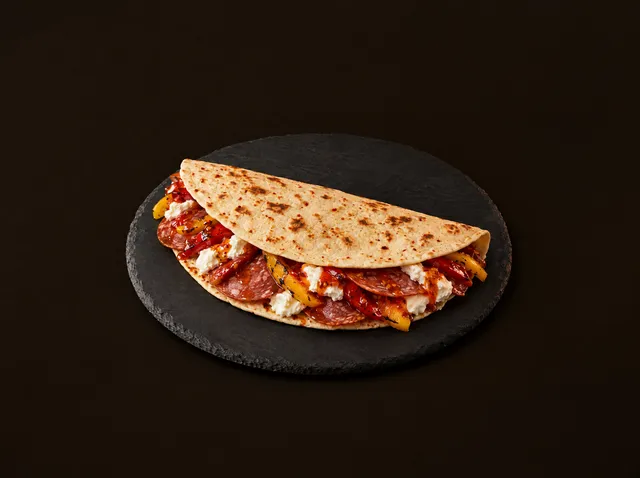
04 / 05
Coppa piacentina, funghi porcini, scamorza e grana
Ottima con l’impasto al basilico
La Romagna che incontra i salumi di casa nostra.
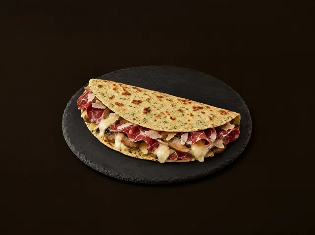
05 / 05
Crema di cioccolato fondente, confettura di pere o arance, rum
Impasto al cacao amaro
Perché c’è sempre posto per il dolce.
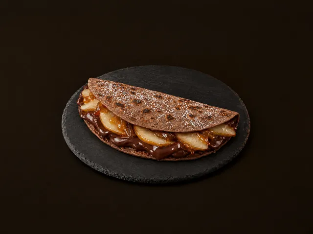
La storia
È dialetto romagnolo. È il ricordo di Rimini, del mare e di una piada tirata a mano e mangiata calda, appena tolta dalla piastra.
Quel ricordo Adriano l’ha portato a Voghera il 19 ottobre 2016, e da allora lo impasta ogni giorno in via Don Minzoni: farina, mani, piastra rovente. Ogni piada racconta un legame con la Romagna e con le sue materie prime; attorno ci sono salumi, formaggi e verdure scelti uno per uno, e qualche idea che in riviera non avevi mai assaggiato.
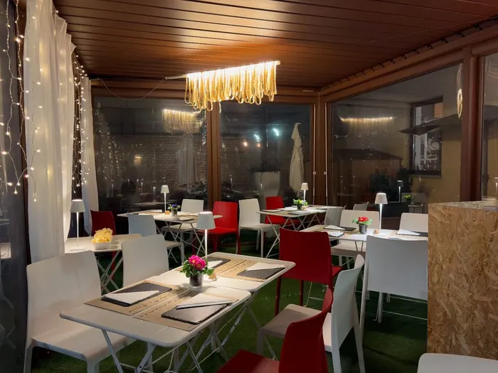
Gli impasti
Sottile, alla riminese. Poi scegli tu: ogni farcitura si può chiedere con l’impasto che preferisci.
Sottile, alla riminese: tirato a mano e cotto al momento.
Più rustico e profumato di grano antico.
Scuro, con una nota di nocciola.
Dolce e tostato: provalo con la mortadella.
Verde e fresco, puntinato di foglie.
Per le piade dolci, e per la Mulatta.
Quello della LaPeppina, con gorgonzola e pere piccanti.
La base della 666, per chi non ha paura.
Su prenotazione, da sei piadine in su.
Non solo piada
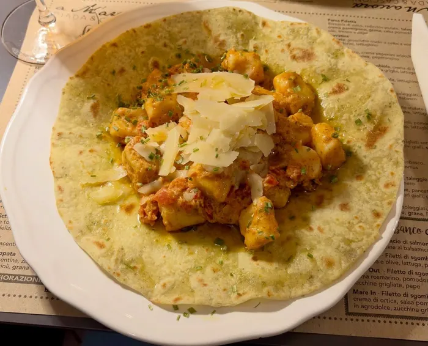
Il giovedì
Impastati la mattina e serviti adagiati sulla piada, ogni settimana con condimenti diversi.
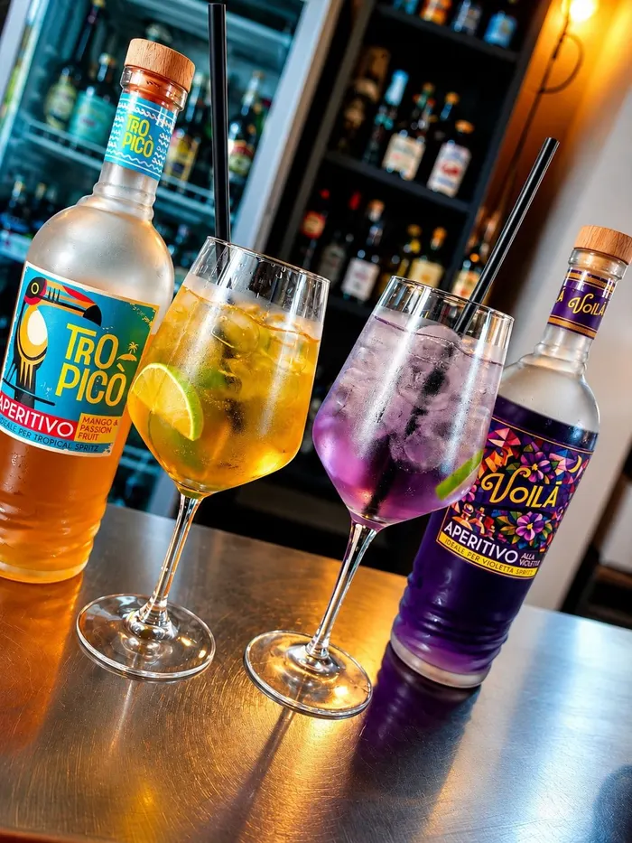
Dalle 18:30
Spritz, gin tonic, birre e vini: una piada da dividere e la serata comincia bene.
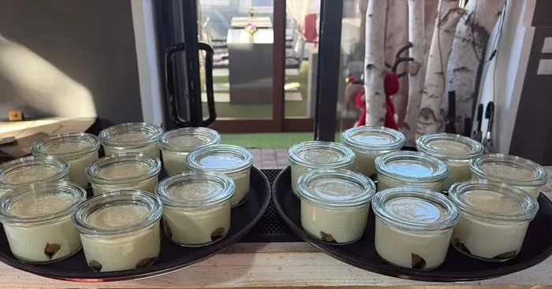
Quando c’è, c’è
Tiramisù in vasetto, frittata di mele e le piade dolci con impasto al cacao.
Il locale
Una sala raccolta e una veranda coperta, per il pranzo veloce e per le sere lunghe. Si mangia al tavolo o si porta via.
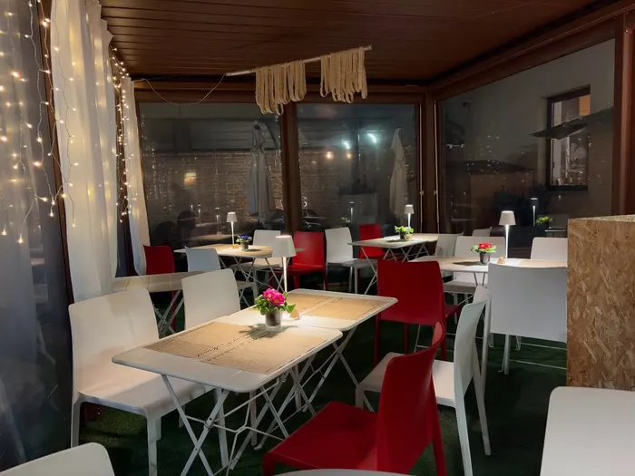
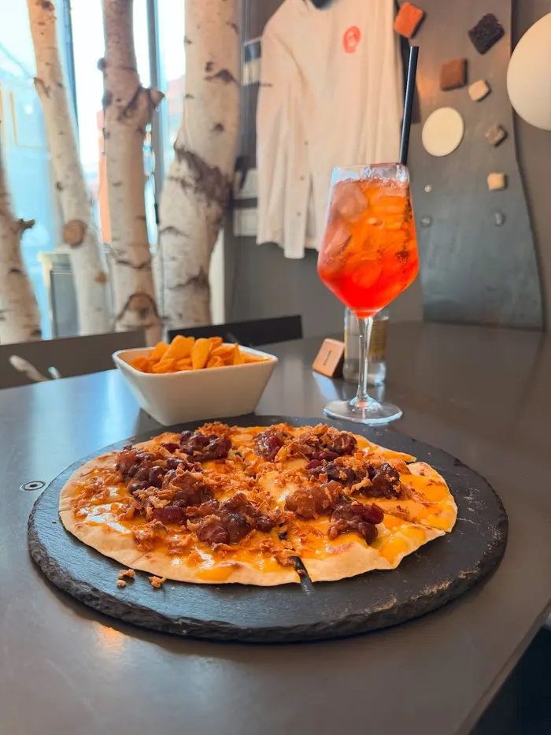
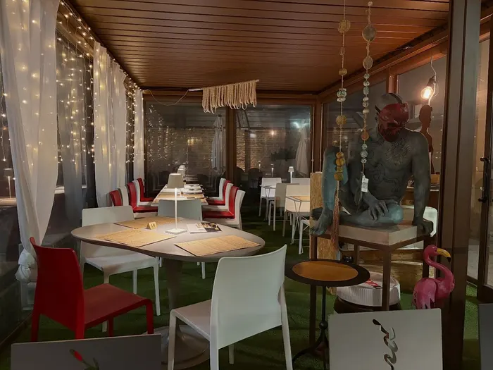
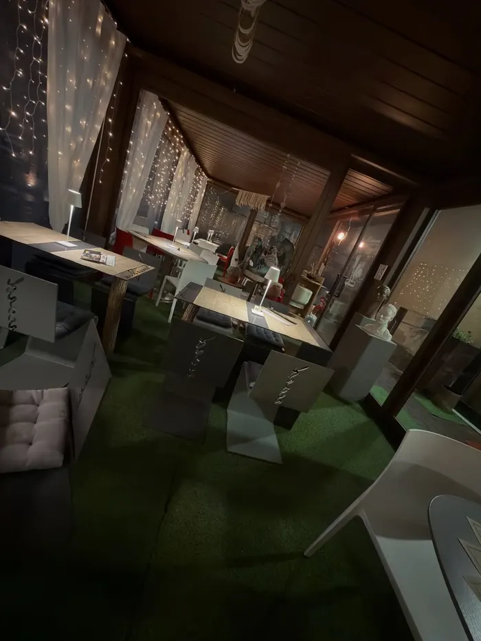
Domande frequenti
È dialetto romagnolo e significa «io mi ricordo». È il ricordo della Romagna, di Rimini e della sua piada, che Adriano ha portato a Voghera nel 2016.
In via Don Minzoni 44 a Voghera, in provincia di Pavia. C’è anche una veranda coperta, aperta tutto l’anno.
Dal martedì al sabato, a pranzo dalle 11:30 alle 15:00 e la sera dalle 18:30 a mezzanotte. Domenica e lunedì siamo chiusi.
Sì: chiama il 339 239 9868 per prenotare un tavolo o per ordinare piadine e cascioni da portare via.
La piada si farcisce dopo la cottura e si piega a metà. Il cascione si chiude prima, con il ripieno dentro, e si cuoce sulla piastra finché è dorato.
Oltre al tradizionale: kamut, canapa bio, pistacchio, basilico, cacao amaro, pepe e peperoncino. L’impasto di riso e farro si prepara su prenotazione.
Certo, i cani sono i benvenuti.
Orari e contatti
| Martedì | 11:30–15:00 · 18:30–00:00 |
|---|---|
| Mercoledì | 11:30–15:00 · 18:30–00:00 |
| Giovedì | 11:30–15:00 · 18:30–00:00 |
| Venerdì | 11:30–15:00 · 18:30–00:00 |
| Sabato | 11:30–15:00 · 18:30–00:00 |
| Domenica | Chiuso |
| Lunedì | Chiuso |
Nei giorni di festa gli orari possono cambiare: nel dubbio, una telefonata.